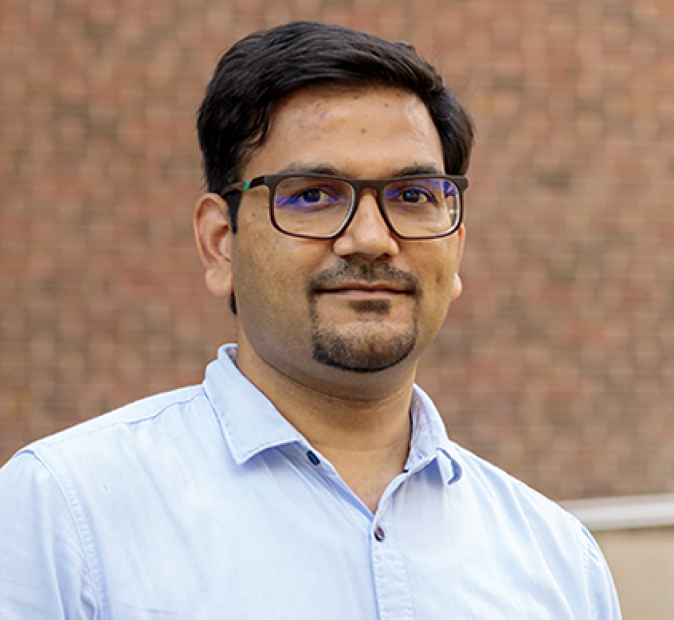

The people behind LEAD


Kris Hammond
Bill and Cathy Osborn Professor of Computer Science · Northwestern
Marcelo Sztainberg
Dean, College of Graduate Studies and Research · Northeastern Illinois
Gerald Balekaki
Assistant Teaching Professor of Computer Science · Illinois Tech

Ashish Khandelwal
Assistant Teaching Professor of Business Administration · University of Illinois